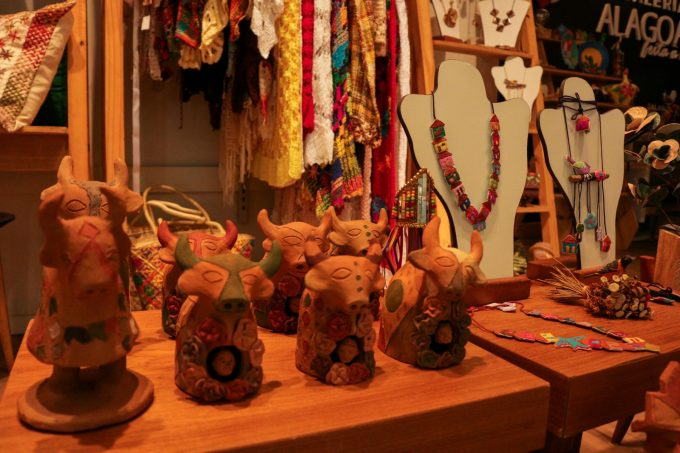

Na cidade de Feliz Deserto, no litoral Sul alagoano, a palha da Taboa dá vida a peças de cores únicas. Produzidas por mulheres artesãs da cidade, a planta se transforma em utensílios, tapetes e bolsas.
Nas feirinhas de artesanato, é possível encontrar trabalhos em couro, madeira, barro, renda, bordado, palha, cerâmica, entre outros. Lá, você terá uma experiência ainda mais completa de compras.

A argila/barro é ótimo para constituir belíssimas esculturas que retratam a vida do homem sertanejo, bonecas e momentos, além de tradições e cultura.